UAV FANET Simulation Results
300s | 18 UAVs | 3 Clusters |
903 Rekeys | 439 Handovers | PDR=1.0
Cluster Pdr
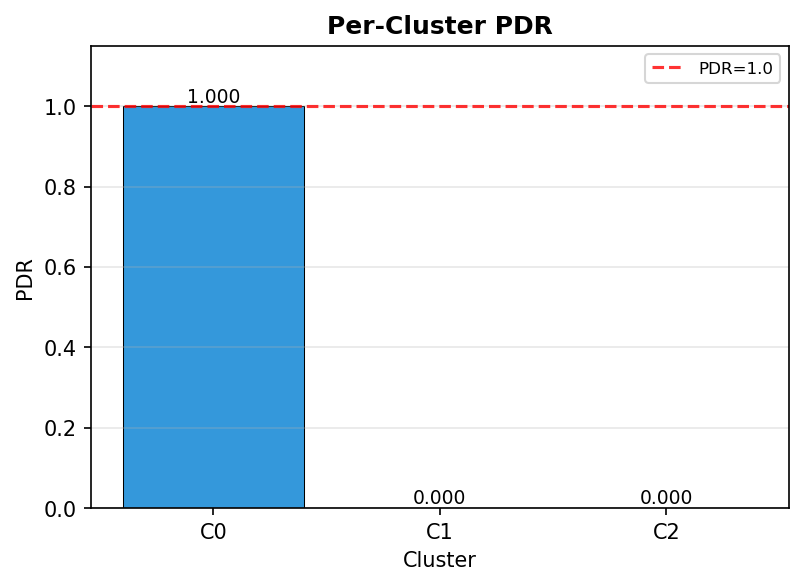
Cluster Throughput
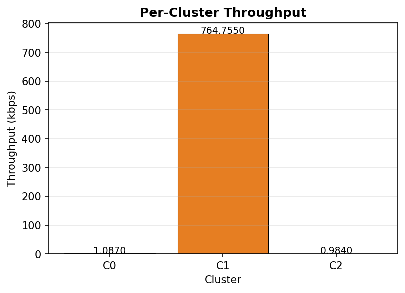
Delay Vs Uav
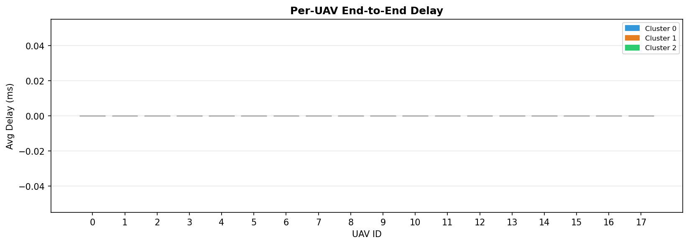
Drop Prob Vs Uav
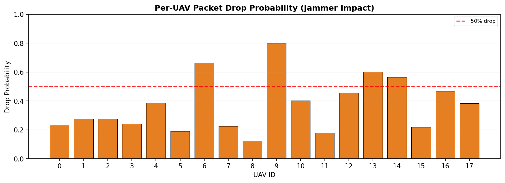
Global Metrics Bar
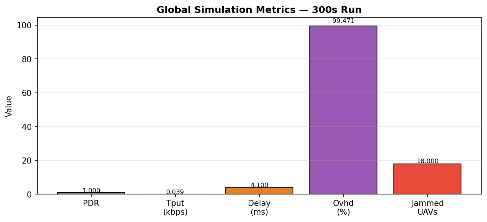
Pdr Vs Uav
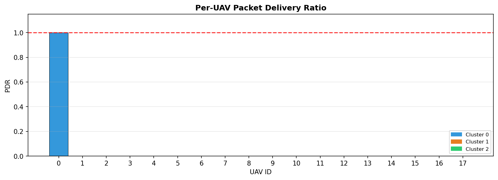
Rekey Latency Hist
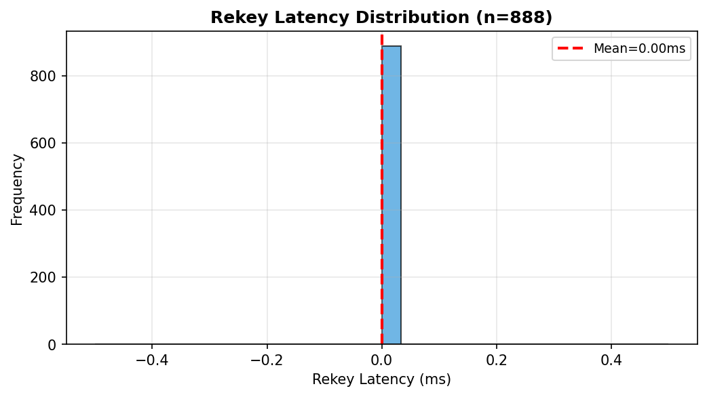
Rekey Per Cluster
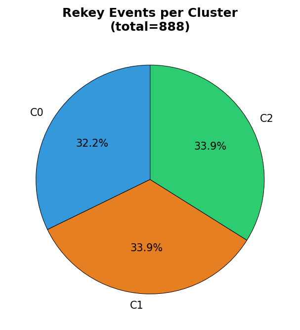
Routing Overhead
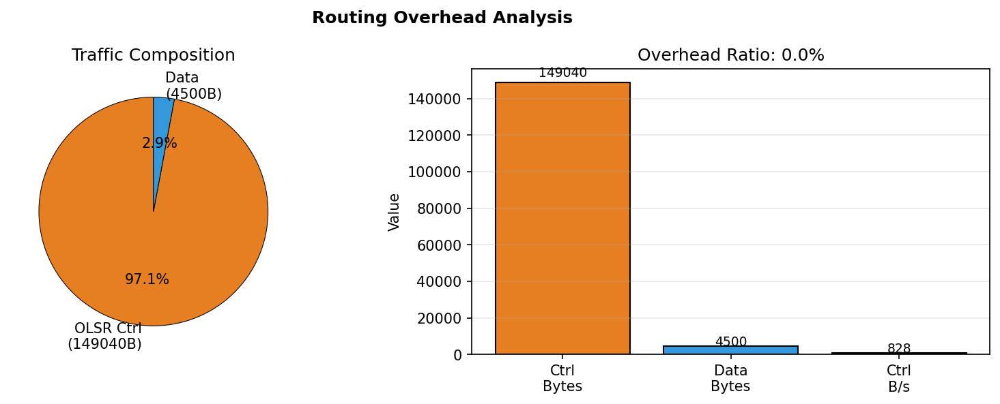
Scenario Handovers
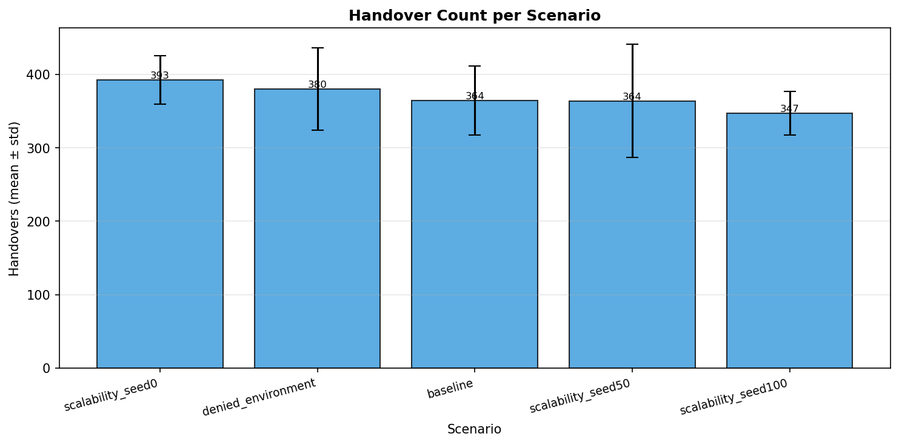
Scenario Rekeys
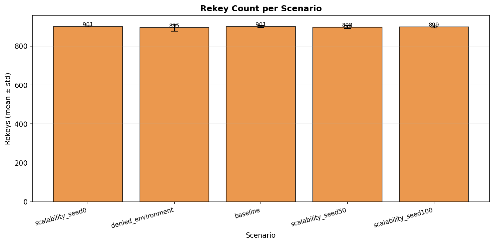
Sinr Cdf
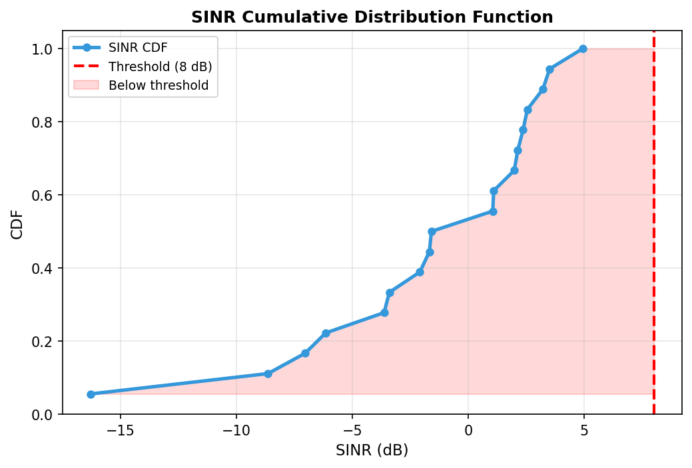
Sinr Distribution
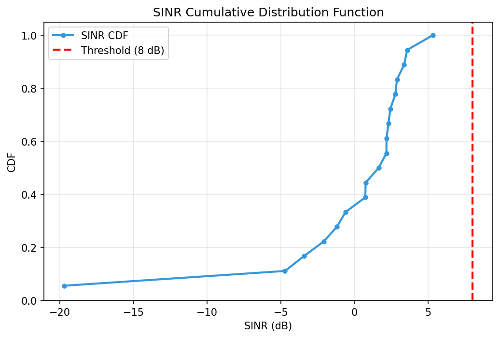
Sinr Vs Uav
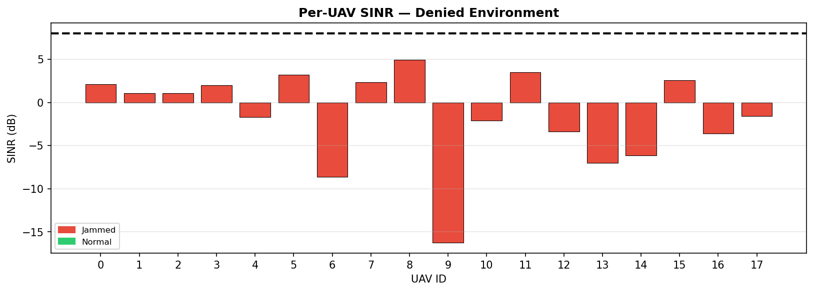
Throughput Vs Uav
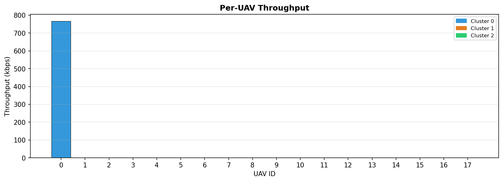